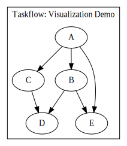

动机
最近项目设计了不少 DSL，用 DSL 来直观描述领域代码，背后生成 C++ 代码，得益于模板元编程，这个想法得以实现。
之前写了一篇《设计并实现一个拓扑排序 DSL》，展示了 C++ 强大的编译时计算的能力，同时生成最终代码。
不过我想更进一步实战，之前看到一个 C++ 并发框架 taskflow，对标 Intel TBB/OpenMB，性能最强，不过图描述方式通过节点的precede/succeed 接口建立，虽然够简单，个人觉得仍不够直观，于是就实现了一套 DSL 来更清晰的描述图，同时在这里记录一下关键点。
目前 PR 链接在：https://github.com/taskflow/taskflow/pull/222，原型代码可见https://github.com/netcan/recipes/blob/master/cpp/metaproggramming/task_dsl_v2/main.cpp
对比
来看看这幅图，

原先方式是需要这样描述：
tf::Taskflow taskflow;
tf::Task A = taskflow.emplace([] () {}).name("A");
tf::Task B = taskflow.emplace([] () {}).name("B");
tf::Task C = taskflow.emplace([] () {}).name("C");
tf::Task D = taskflow.emplace([] () {}).name("D");
tf::Task E = taskflow.emplace([] () {}).name("E");
A.precede(B, C, E);
C.precede(D);
B.precede(D, E);用 DSL 之后只需要这样，代码更直观：
def_task(A, { std::cout << "TaskA\n"; };);
def_task(B, { std::cout << "TaskB\n"; };);
def_task(C, { std::cout << "TaskC\n"; };);
def_task(D, { std::cout << "TaskD\n"; };);
def_task(E, { std::cout << "TaskE\n"; };);
taskbuild(
task(A)
-> fork(B, C)
-> task(D),
merge(A, B)
-> task(E)
)(tf);目前支持的特性、原语如下：
def_task定义一个 taskdef_taskc定义一个带 context 数据的 tasktaskbuild描述 task 间的连接关系，按需传递 context 数据fork/merge表示任意多个 task，而task()表示一个 taskfork(a,b,c,d) -> merge(e,f,g,h)会生成 笛卡尔积 一共 16 条连接关系__task(a) -> __task(b) -> __task(c) -> ...能够通过->描述任意长度的连接关系
关键实现
DSL 文法如下：
<def_task> ::= <TaskSignature>
<taskbuild> ::= <Chains>
<fork> ::= <SomeTask>
<merge> ::= <SomeTask>
<Chains> ::= <Chain>
| <Chain>, <Chains>
<Chain> ::= <Tasks> -> <Tasks>
| <Tasks> -> <Chain>
<Tasks> ::= <SomeTask>
<SomeTask> ::= <TaskSignature>
| <TaskSignature>, <SomeTask>
| <SomeTask>通过上述规则可以构建 TaskDSL 对象，其对象主要主要由两大成员组成：
TasksCB异构容器，用于存放每个TaskSignature，而TaskSignature的职责就是 Task 工厂，用于创建具体的 task，然后存放于传递的Taskflow对象中，其拥有 task 的所有权。OneToOneLinkInstances异构容器，由TaskAnalyzer模块推断出来的 task 一对一关系，其方法build用于生成From.precede(To)代码。
TasksCB
这里需要考虑一个问题，如何将 context 数据通过 TaskSignature 工厂传递给 task 呢？而 task 运行时不需要看到 context 变量就好了，就像 lambda 捕获那种效果？
这里就需要发挥多继承的威力了，我将 Context 类和 TaskSignature 通过多继承拼装到一块去来解决这个问题：
#define def_taskc(name, Context, ...) \
struct name : TaskSignature, Context { \
name(const Context &context) : Context(context) {} \
auto operator()() { \
/* copy *this(copy CONTEXT to lambda) */ \
return [*this] __VA_ARGS__; \
} \
};创建 task 的时候，捕获了 *this，而*this 蕴含着 Context 数据。之所以需要 *this 而不是 this，是因为需要将 Context 数据拷贝到 task 这个 lambda 中，因为一旦 task 创建完成后，TaskSignature 对象就析构，从而导致悬挂指针，而拷贝避免了这个问题，这也要求 Context 类是 Copyable 的。
OneToOneLinkInstances
之所以能得到 task(A)->task(B)->task(C)->task(D)... 的 chain 效果，其本质背后是函数签名 类型 ：auto(*)(A) -> auto(*)(B) -> auto(*)(C) -> auto(*)(D) -> void，这是一个高阶函数，输入 A 得到一个函数，输入其参数 B 得到一个函数，以此类推，最终得到 void。而最终的 void 是必不可少的，因为 C++ 规范要求模板参数不能全为 auto，在 clang11 支持这个特性，而 clang12 把这个 bug 修好了 = = 为了避免用户需要每次在最后指明->void，我用 Map 宏[1] 自动给每条 chain 后面加上->void。
这个一连串的效果还是我突然得到的灵感，给了我很大的惊喜，这样就可以用深度优先的方式描述了，而不仅仅局限于广度优先。C++ 实在是太有意思了😂。
得到 chain 后，需要将其解构成一个个 (Connection, ->) 的偏序集。这里很巧妙的用了模板萃取技术得到：
// 输入 Chain，输出偏序集 OUT: (Connection, ->)
template<typename T, typename OUT = TypeList<>>
struct Chain;
// 模式匹配，边界情况，返回结果
template<typename F, typename OUT>
struct Chain<auto(*)(F) -> void, OUT> {
using From = F;
using type = OUT;
};
// 从头往后取 Tasks，构成一个个 Connection
template<typename F, typename T, typename OUT>
struct Chain<auto(*)(F) -> T, OUT> {
private:
using To = typename Chain<T, OUT>::From;
public:
using From = F;
using type = typename Chain
<T, typename OUT::template appendTo<Connection<From, To>>>::type;
};有了 (Connection, ->) 偏序集，还需要从中得到一对一的关系，比如 Connection<SomeTask<A, B>, SomeTask<C>> 应该得到笛卡尔积关系：OneToOneLink<A, C>, OneToOneLink<B, C>，下面是求笛卡尔积代码：
// 输入 <FromTasks, ToTasks>, 输出 OneToOneLinkSet
template<typename FROMs, typename TOs, typename = void>
struct BuildOneToOneLink;
// 外层循环
template<typename ...Fs, typename Ts>
struct BuildOneToOneLink<TypeList<Fs...>, Ts> {
using type = Concat_t<typename BuildOneToOneLink<Fs, Ts>::type...>;
};
// 内层循环
template<typename F, typename... Ts>
struct BuildOneToOneLink<F, TypeList<Ts...>,
std::enable_if_t<!IsTypeList_v<F>>> {
using type = TypeList<OneToOneLink<F, Ts>...>;
};最后去重得到 OneToOneLinkInstances，从而生成一条条precede 语句，而这些都是在编译期完成的。
结论
从以上探索、实现过程发现，C++ 其实是一门很有意思的语言，没有约束能给人很多想象空间，可玩性也更强，这也对程序猿有极高的要求，才能 hold 得住这么一个怪物😀
而由于其编译期元编程是偶然发现的，没有经过专门设计，导致语法过于复杂，但是其实和 FP 语言思路写法很相似，比如实现一个快排，不考虑优化，在 Haskell 我会这么写：
quicksort :: (Ord a) => [a] -> [a]
quicksort [] = []
quicksort (x:xs) =
let smallerSorted = quicksort [a | a <- xs, a <= x]
biggerSorted = quicksort [a | a <- xs, a > x]
in smallerSorted ++ [x] ++ biggerSorted而在 C++ 中，思路是一样的，这么实现：
template<typename IN, template<typename, typename> class CMP>
struct QuickSort {
using type = TypeList<>;
};
template<typename IN, template<typename, typename> class CMP>
using QuickSort_t = typename QuickSort<IN, CMP>::type;
template<template<typename, typename> class CMP, typename H, typename ...Ts>
class QuickSort<TypeList<H, Ts...>, CMP> {
template<typename E>
struct LT { static constexpr bool value = CMP<E, H>::value; };
using P = Partition_t<TypeList<Ts...>, LT>;
// smallerSorted = quicksort [a | a <- xs, a <= x]
using SmallerSorted = QuickSort_t<typename P::satisfied, CMP>;
// biggerSorted = quicksort [a | a <- xs, a> x]
using BiggerSorted = QuickSort_t<typename P::rest, CMP>;
public:
// smallerSorted ++ [x] ++ biggerSorted
using type = Concat_t<
typename SmallerSorted::template appendTo<H>, BiggerSorted
>;
};这也是玩 C++ 的乐趣所在，很自由的表达一切。